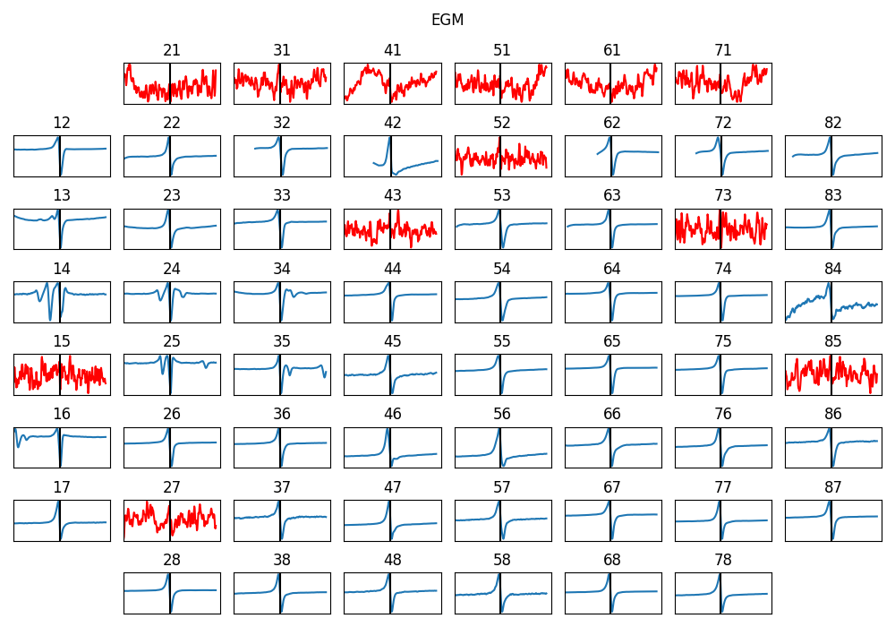

5.4. MEA: Microelectrode Array Processing Toolkit¶
The Microelectrode Array System utilies an array of electrodes mounted on a small plate (MEA plat) as a grid electrodes (e.g. 60) evenly spaced (700μm apart). It is used to analyse the eletrophysiology of cells and tissues under different clinical conditions by stimulating with certain voltage on a regular intervals.

A figure shown below is a plate of MEA system of 60 electrodes (source: https://www.multichannelsystems.com/products/meas-60-electrodes). One of the commonly used research field is the cardiac electrophysiology.

This Python toolkit is for automated electrophysiological analysis of MEA recordings, designed to streamline data preprocessing, feature extraction, visualisation, and batch analysis. With a focus on reproducibility, transparency, and ease of use, this toolkit offers a robust alternative to manual processing. It enables cardiac researchers to efficiently analyse MEA data at scale, while allowing extension or adaptation of analysis modules to suit specific experimental needs. An overview of the MEA toolkit is shown in figure below:

Check our full paper explaining this toolkit - A Python Toolkit for Automated Electrophysiological Analysis of Microelectrode Array Recordings, published in Computing in Cardiology 2025.
Check examples here: Microelectrode Array (MEA)
5.4.1. Complete analysis of a MEA recording (with a single-line)¶
This toolkit allows researchers to perform a complete analyse of an MEA recording by using `spkit.mea.analyse_mea_file` function.
This uses the default settings of all the paramters for extracting electrograms, identifying bad eletrodes, extracting features and plotting figures.
`spkit.mea.analyse_mea_file` needs two essential inputs, `files_name` : a full path of recoding file in ‘.h5’ format and `stim_fhz` frequency of stimulus in Hz.
Download a sample file
import numpy as np
import matplotlib.pyplot as plt
import os, requests
import spkit as sp
print('spkit-version: ',sp.__version__)
# Download Sample file if not done already
file_name= 'MEA_Sample_North_1000mV_1Hz.h5'
if not(os.path.exists(file_name)):
path = 'https://spkit.github.io/data_samples/files/MEA_Sample_North_1000mV_1Hz.h5'
req = requests.get(path)
with open(file_name, 'wb') as f:
f.write(req.content)
Complete analysis with default setting
Features_df,Features_ch,Features_mat, Data = sp.mea.analyse_mea_file(file_name,stim_fhz=1)
It returns Features_df, Features_ch, Features_mat, and Data.
Features_df: A spreadsheet (pandas dataframe) of summarised features.Features_ch: A spreadsheet of all the features for each channels (good and bad).Features_mat: A dictionary containing all the feature matricesData: A dictionary containing raw data


5.4.2. Step-by-step analysis¶
In this section, we describe how to analyse an MEA recording step-by-step. An example of this is linked below:
There are several steps to analyse a recording file, which are as follow:
Read MEA file recording file
Stim Localisation
Aligning Cycles
Aggregating Cycles/Select one
Activation Time
Activation & Repolarisation Time
Action Potential Duration APD
Extract EGM
EGM Feature Extraction
Identifying BAD Channels
Creating and Visualising Feature Matrix
Interpolation
Conduction Velocity
5.4.3. 1. Read MEA recording file¶
To read an MEA file, HDF reading function of spkit (spkit.io.read_hdf). To experiment with steps, download a sample file from ‘https://spkit.github.io/data_samples/files/MEA_Sample_North_1000mV_1Hz.h5’
fs = 25000
X,fs,ch_labels = sp.io.read_hdf(file_name,fs=fs,verbose=1)
This returns X which is numpy array, fs sampling rate, and ch_labels channel lables
5.4.4. 2. Stim Localisation¶
A biphasic stimulus (\(\pm\) 1000 mV for 2 ms) has a sharp deflection in middle, while transition from -1000 mV to +1000 mV. This sharp deflection is identified by \(max \{dv(t)/dt\}\) (maximum positive slop).

We use ch=0, which is 47, as can be seen from ch_labels[0]
stim_fhz = 1
stim_loc,_ = sp.mea.get_stim_loc(X,ch=0,fs=fs,fhz=stim_fhz, plot=1,verbose=1)
stim_loc_ms = 1000*np.array(stim_loc)/fs
Plot
t = 1000*np.arange(X.shape[1])/fs
sep = 1000
tix = np.arange(len(X))*sep
tiy = np.arange(0,len(X)+1,5)
tiy[0] =1
plt.figure(figsize=(12,7))
plt.plot(t,X.T - tix)
plt.xlim([t[0],t[-1]])
plt.yticks(-(tiy-1)*sep,tiy,fontsize=10)
plt.ylabel('Channel #')
plt.xlabel('time (ms)')
plt.title('Full recording of channels')
plt.xticks(stim_loc_ms)
plt.tight_layout()
plt.show()
5.4.5. 3. Aligning Cycles¶
After the locations of each stimulus across all channels are identified, all cycles are aligned with the corresponding stimulus for each channel. While aliging the cycles, the first 2 ms of the recording immediately following \(max \{dv(t)/dt\}\) are excluded.

exclude_first_dur=2
dur_after_spike=500
exclude_last_cycle=True
XB = sp.mea.align_cycles(X,stim_loc,fs=fs, exclude_first_dur=exclude_first_dur,
dur_after_spike=dur_after_spike,
exclude_last_cycle=exclude_last_cycle,pad=np.nan,verbose=True)
print('Number of EGMs/Cycles per channel =',XB.shape[2])
Plot
ch = 0
t = 1000*np.arange(XB.shape[1])/fs
plt.figure(figsize=(5,4))
plt.plot(t,XB[ch,:,:])
plt.grid()
plt.title(f'{XB.shape[2]} Cycles (Alinged) of Channel: {ch}')
plt.xlabel('time (ms)')
plt.show()
5.4.6. 4. Averaging Cycles or Selecting one¶
Once all cycles are aligned across channels, an averaged cycle for each channel is produced by computing the arithmetic mean. Averaging cycles reduces noise and yields clearer electrograms. By default, the final cycle is excluded (this can be modified)
egm_number = -1 means to aggrerate all the cycles, to select 1st cycle, set egm_number=0
egm_number = -1
if egm_number<0:
X1B = np.nanmean(XB,axis=2)
print(' -- Averaged All EGM')
else:
# egm_number should be between from 0 to 'Number of EGMs/Cycles per channel '
assert egm_number in list(range(XB.shape[2]))
X1B = XB[:,:,egm_number]
print(' -- Selected EGM ->',egm_number)
print('EGM Shape : ',X1B.shape)
5.4.7. 5. Activation Time¶
Activation Time (AT) is defined as the time of the maximum negative slope (\(\max\{-dv(t)/dt\}\)) of the contact electrograms (EGMs). Following electrical stimulation of cells or tissues, there exists a specific duration (depending on the study and treatment) within which an electrogram is expected to occur.

at_range=[0,50] # expected range for AT
# for only activation
at_loc = sp.mea.activation_time_loc(X1B,fs=fs,at_range=at_range)
5.4.8. 6. Repolarisation Time (optional)¶
Similar to AT, RT is defined by the time of the maximum deflection of the T-wave electrogram; however, either a positive or a negative deflection may be considered for RT (the alternative and Wyatt methods). As RT follows AT, the expected range for RT excludes the already computed AT.
at_range=[0,50]
rt_range= [0.5, None]
# for only activation
at_loc = sp.mea.activation_time_loc(X1B,fs=fs,at_range=at_range)
# for only activation and repolarisation together
at_loc, rt_loc = sp.mea.activation_repol_time_loc(X1B,fs=fs,at_range=at_range, rt_range=rt_range)
at_loc_ms = 1000*at_loc/fs
rt_loc_ms = 1000*rt_loc/fs
5.4.9. 7. Action Potential Duration (APD) (if RT is computed)¶
Action Potential Duration is computed only is RT has been computed. \(APD = RT-AT\)
apd_ms = rt_loc_ms-at_loc_ms
5.4.10. 8. Extracting EGM¶
With identified ATs, EGMs for each channel are extracted over a defined duration (e.g. 5 ms). Each EGM is then processed to remove drift using the Savitzky–Golay filter,
dur_from_loc = 5
remove_drift = True
XE,ATloc = sp.mea.extract_egm(X1B,act_loc=at_loc,fs=fs,dur_from_loc=dur_from_loc,remove_drift=remove_drift)
print(XE.shape, ATloc.shape)

5.4.11. 9. EGM Feature Extraction¶
From extracted EGMs, a predefined set of morphological features is extracted for each channel.
Peak-to-peak voltage
Fractionation Index
EGM duration
Energy and voltage dispersion
EGM_feat = []
for i in range(len(XE)):
egmf, feat_names = sp.mea.egm_features(XE[i].copy(),act_loc=ATloc[i],fs=fs,plot=0,verbose=0,width_rel_height=0.75,
findex_rel_dur=1, findex_rel_height=0.3, findex_npeak=False)
EGM_feat.append(egmf)
#XE = np.array(XE)
#ATloc = np.array(ATloc)
EGM_feat = np.array(EGM_feat)
print('-'*100)
print('Following EGM Features are etracted: ', feat_names)
print('EGM_Feat shape :',EGM_feat.shape)
print('Shapes: XE =',XE.shape, ', AT =',ATloc.shape,', EGM_F=' ,EGM_feat.shape)
print('-'*100)

5.4.12. 10. Identifying BAD Channels/electrodes¶
There are three criteria implemented to automatically identifies poor-quality channels and EGMs. These criteria can be configured.
Based on Stimulation
good_channels = []
bad_channels = [15]
p2p_thr=5
bad_ch_stim_thr = 2
bad_ch_mnmx=[None, None]
range_act_thr=[0,50]
bad_channels_list =[]
bad_channels_idx_1 = []
bad_channels_idx_1 = sp.mea.find_bad_channels_idx(X,thr=bad_ch_stim_thr,stim_fhz=stim_fhz,fs=fs,
mnmx=bad_ch_mnmx,plot=False,plot_dur=2,verbose=0)
bad_channels_ch_1 = list(ch_labels[bad_channels_idx_1])
bad_channels_list = bad_channels_list + bad_channels_ch_1
bad_channels_list = list(set(bad_channels_list))
bad_channels_list.sort()
Based on EGM voltage
bad_channels_idx_2 = []
bad_channels_idx_2 = np.where(EGM_feat[:,0]<p2p_thr)[0]
bad_channels_ch_2 = list(ch_labels[bad_channels_idx_2])
bad_channels_list = bad_channels_list + bad_channels_ch_2
Based on Activation Time range
This only works, when expected range passed to EGM is open-ended.
bad_channels_idx_3 =[]
bad_channels_idx_3 = bad_channels_idx_3 + list(np.where(at_loc_ms<range_act_thr[0])[0])
bad_channels_idx_3 = bad_channels_idx_3 + list(np.where(at_loc_ms>range_act_thr[1])[0])
bad_channels_ch_3 = list(ch_labels[bad_channels_idx_3])
bad_channels_list = bad_channels_list + bad_channels_ch_3
bad_channels_list = bad_channels_list + bad_channels
bad_channels_list = list(set(bad_channels_list))
bad_channels_list.sort()
if len(good_channels):
bad_channels_list = list(set(bad_channels_list) - set(good_channels))
bad_channels_list.sort()
good_channels_list = np.array([ch for ch in ch_labels if ch not in bad_channels_list])
good_channels_list_idx = np.array([list(ch_labels).index(ch) for ch in ch_labels if ch not in bad_channels_list])
5.4.13. 11. Creating and Visualising Feature Matrix¶
From list of features as arrays, the feaure matrixes can be created and visualise them.
AT_grid = sp.mea.arrange_mea_grid(at_loc_ms, ch_labels=ch_labels)
RT_grid = sp.mea.arrange_mea_grid(rt_loc_ms, ch_labels=ch_labels)
APD_grid = sp.mea.arrange_mea_grid(apd_ms, ch_labels=ch_labels)
Ax,Mxbad = sp.mea.mea_feature_map(at_loc_ms,ch_labels=ch_labels,bad_channels=bad_channels_list,figsize=(10,4),
vmin=0,vmax=20,label='ms',title='Activation Time')
_ = sp.mea.mea_feature_map(EGM_feat[:,0],ch_labels=ch_labels,bad_channels=bad_channels_list,figsize=(10,4),
vmin=0,vmax=300,label='mV',title='Peak-to-Peak')
_ = sp.mea.mea_feature_map(1000*EGM_feat[:,1]/fs,ch_labels=ch_labels,bad_channels=bad_channels_list,figsize=(10,4),
vmin=0,vmax=5,label='ms',title='EGM Duration')
_ = sp.mea.mea_feature_map(EGM_feat[:,2],ch_labels=ch_labels,bad_channels=bad_channels_list,figsize=(10,4),
vmin=0,vmax=5,label='F-index',title='Fractionation Index',fmt='.0f')

5.4.14. 12. Interpolation¶
After removing values from bad channels, matrixes can be filled by interpolating the missing (BAD) values.
range_act_thr=[0,50]
intp_param = dict(pkind='linear',filter_size=3,method='conv')
AxI, AxIx = sp.fill_nans_2d(Ax*Mxbad,clip_range=range_act_thr,**intp_param)
Plots
sp.mea.mat_list_show([Ax, Ax*Mxbad, AxI],figsize=(15,4),vmin=0,vmax=20,grid=(1,3),
titles=['Activation Time', '- Bad Channels', 'Interpolated Activation Time'],labels=['ms','ms','ms'])
sp.mea.mat_list_show([AxI, AxIx],figsize=(15,4),vmin=0,vmax=20,grid=(1,3),
titles=['Interpolated (preserving original values)', 'Interpolation-Smooth'],labels=['ms','ms'])
5.4.15. 13. Conduction Velocity¶
To compute the conduction velocity, a few parameters have to be defined.
cv_param = dict(eD=700,esp=1e-10,cv_pad=np.nan,cv_thr=100,arr_agg='mean',plots=2,verbose=True)
CV_df, CV_thetas, CV0, CV = sp.mea.compute_cv(AxI,Mxbad,flip=False,**cv_param)
_, CV_thetas_smooth, _, _ = sp.mea.compute_cv(AxIx,Mxbad,flip=False,silent_mode=True,**cv_param)
Plots
plt.figure(figsize=(15,6))
plt.subplot(121)
im = plt.imshow(AxI,cmap='jet',interpolation='bilinear',vmin=0,vmax=20,extent=[0,7,7,0])
plt.contour(AxI,levels=25,colors='k')
plt.colorbar(im, label='ms')
plt.title('Activation Map')
plt.xticks([])
plt.yticks([])
plt.subplot(122)
sp.mea.mat_1_show(CV*Mxbad,fmt='.1f',vmin=10,vmax=30,cmap='jet',label='cm/s',title='Cond. Velocity')
plt.tight_layout()
plt.show()
cv_arr_prop = dict(color='w',scale=None)
_ = sp.direction_flow_map(X_theta=CV_thetas,X=AxI,upsample=1,
figsize=(15,7),square=True,cbar=False,arr_pivot='mid',
stream_plot=True,title='CV',show=True,
heatmap_prop =dict(vmin=0,vmax=20,cmap='jet'),
arr_prop =cv_arr_prop,
stream_prop =dict(density=1,color='k',linewidth=2))

Check-out the exaple each step